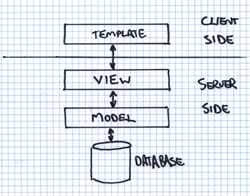
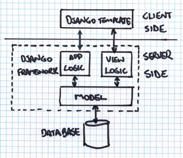

TALLER DJANGO
## ¿Qué es Django? Django es un framework web de alto nivel que permite el desarrollo rápido de sitios web y que contribuye a escribir software: - Completo - Versátil - Seguro - Escalable - Mantenible - Portable <aside class="notes"> Completo: principios de diseño consistentes<br> Versátil: usado para construir casi cualquier tipo de sitio web<br> Seguro: ejm. administrar cuentas de usuario y contraseñas<br> Escalable: cada parte de la arquitectura es independiente de las otras<br> Mantenible: agrupación de la funcionalidad relacionada en "aplicaciones" reutilizables<br> Portable: Python se ejecuta en muchas plataformas<br> </aside>
Patrón

Patrón

## Versiones 
Instalando python 3
Sitio oficial
### WINDOWS ``` $ py -3 -V ```<br><br> ``` $ pip3 list ``` > Puede que necesites añadir al path de tu sistema, si en caso python no puede ser encontrado.
### LINUX ``` $ python3 -V ```<br><br> ``` $ sudo apt-get install python3-pip ```
### MACOS ``` $ python3 -V ```<br><br> ``` $ pip3 list ```
### INSTALANDO ENTORNO VIRTUAL El entorno es una instalación de Django en tu computadora local que puedes usar para desarrollar y probar apps Django antes de desplegarlas en producción.
### WINDOWS ``` $ pip3 install virtualenvwrapper-win ```
### LINUX ``` $ sudo pip3 install virtualenvwrapper ```<br><br> Añadir al final del archivo ***.bashrc*** ``` export WORKON_HOME=$HOME/.virtualenvs export VIRTUALENVWRAPPER_PYTHON=/usr/bin/python3 export PROJECT_HOME=$HOME/Devel source /usr/local/bin/virtualenvwrapper.sh ``` Recargar el fichero: ``` $ source ~/.bashrc ``` ``` virtualenvwrapper.user_scripts creating /home/ubuntu/.virtualenvs/premkproject virtualenvwrapper.user_scripts creating /home/ubuntu/.virtualenvs/postmkproject ... virtualenvwrapper.user_scripts creating /home/ubuntu/.virtualenvs/preactivate virtualenvwrapper.user_scripts creating /home/ubuntu/.virtualenvs/postactivate virtualenvwrapper.user_scripts creating /home/ubuntu/.virtualenvs/get_env_details ```
### MACOS ``` $ sudo pip3 install virtualenvwrapper ```<br><br> Añadir al final del archivo ***.bash_profile*** ``` export WORKON_HOME=$HOME/.virtualenvs export VIRTUALENVWRAPPER_PYTHON=/usr/bin/python3 export PROJECT_HOME=$HOME/Devel source /usr/local/bin/virtualenvwrapper.sh ``` Recargar el fichero:<br> ``` $ source ~/.bash_profile ```
### Creando entorno virtual ``` $ mkvirtualenv my_env ```
#### Uso del entorno virtual > ||| > | ---------------------------- | ----------------------------------- | > |Salir del entorno virtual | ```$ deactivate``` | > |Listar los entornos virtuales | ```$ workon``` | > |Activar el entorno virtual | ```$ workon my_env``` | > |Eliminar un entorno | ```$ rmvirtualenv my_env``` | > |||
### INSTALANDO DJANGO Con el entorno virtual activo ``` (my_env) $ pip3 install django==2.2 ```
### COMPROBANDO LA INSTALACIÓN #### WINDOWS ``` (my_env) $ py -3 -m django --version ```<br><br> #### LINUX / MACOS ``` (my_env) $ python3 -m django --version ```
### INICIANDO UN PROYECTO EN DJANGO ``` (my_env) $ django-admin startproject my_site_django ```
##### Manos a la obra ## [Let's to code!](#home)